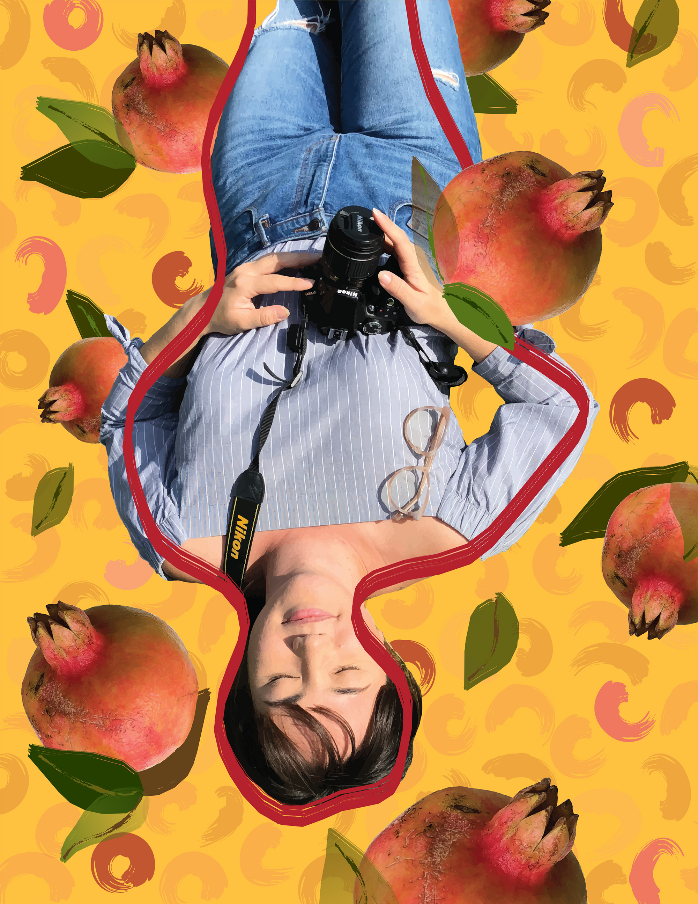

Nicole is an illustrator and designer based out of Honolulu. Her recent work uses digital mediums to explore themes like color, place, and identity.
She was born and raised in Honolulu, flew across the country to attend Princeton University, flew even further to teach English in Vietnam and Thailand, and has since returned home to pursue her love of art.
Outside of art and design, Nicole enjoys watching movies, exploring nature, and traveling. The next destination she would love to check out is Peru!
